EMILY TRAN

FUNK VS FRIGHT

FUNK VS FRIGHT is a 2.5D rhythm game created for a 2025 Halloween Horror Game Jam hosted by SPIN Game Jam. Players play as a girl named FUNK, exploring a strange and eerie world while uncovering the secrets of its inhabitants, and her own identity, through frightful beats. FUNK VS FRIGHT was developed by a team of four within a 10-day time limit.
[ Play on itch.io! ]GAMEPLAY VIDEO
CREDITS
- Code, Character & HUD Art, Animation, Design, Dialogue System & Narrative – Emily Tran
- Code, Environmental Art, UI System, Dialogue System & Level System – Nathan Lam
- Code, Music, SFX & Level Design (Beatmaps) – Angela Santos
- Code & Game Mechanics – William Licup
MY CONTRIBUTIONS
Below are the art concepts, sprites and animations I designed and implemented for this project.
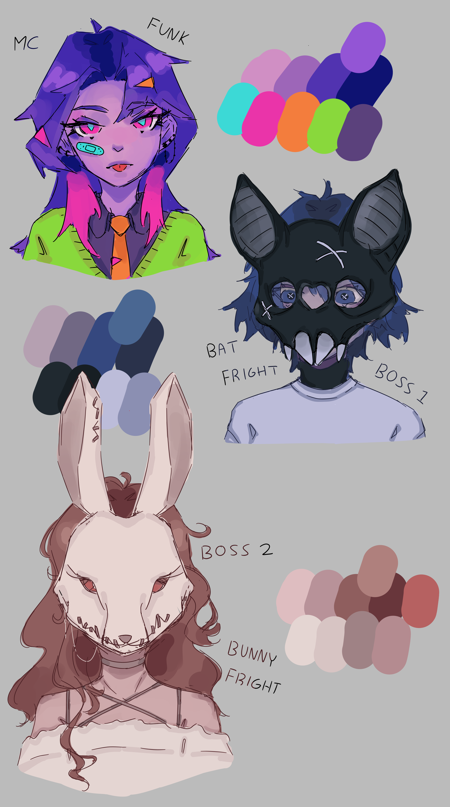
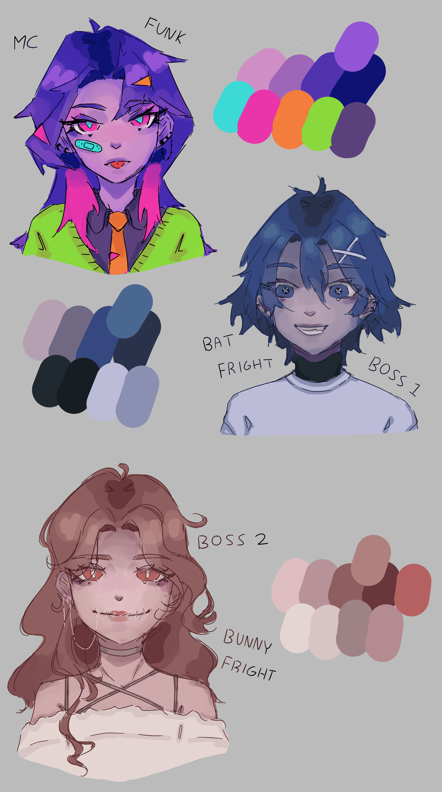
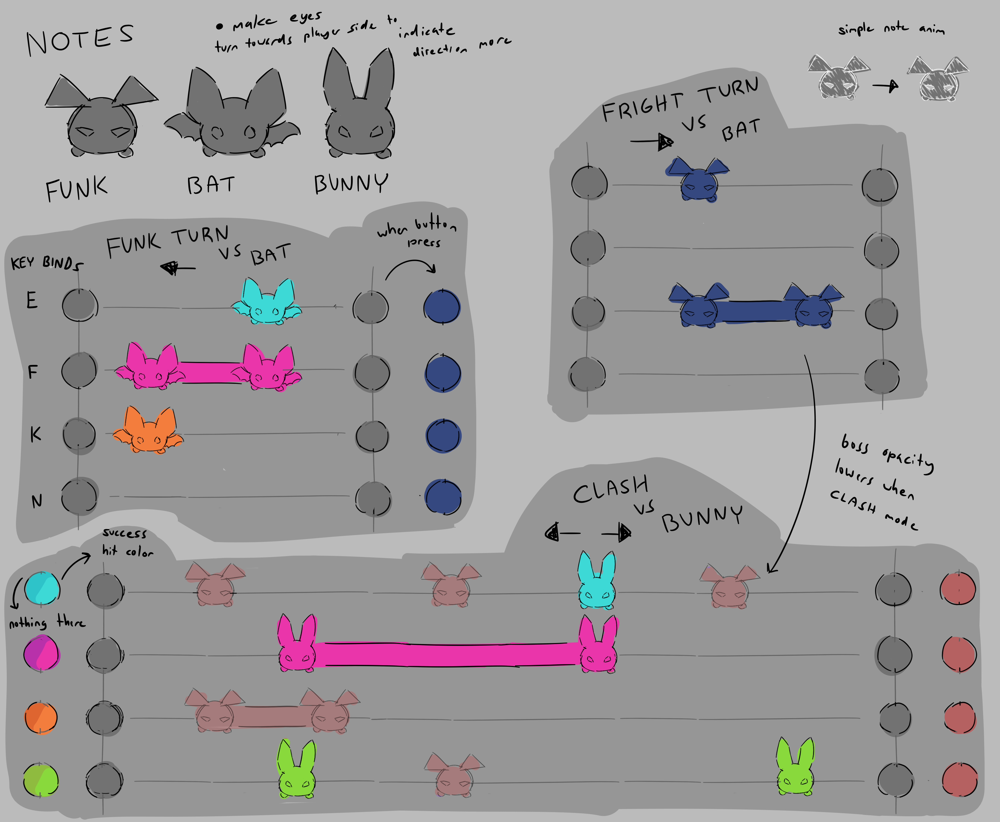
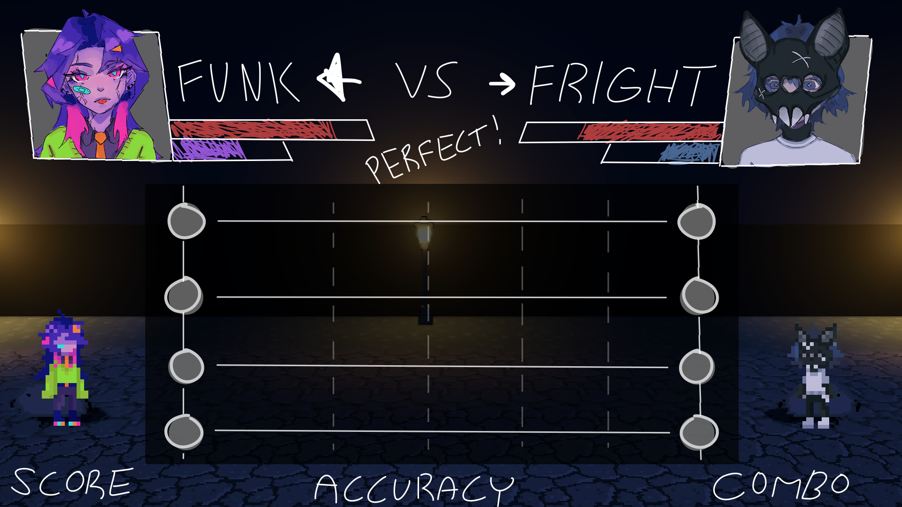
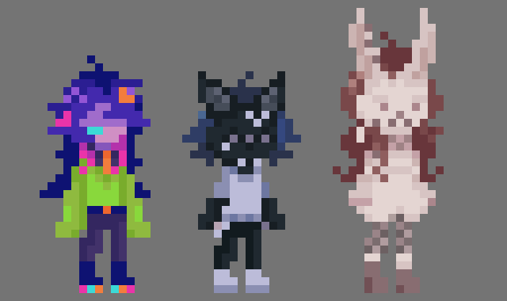
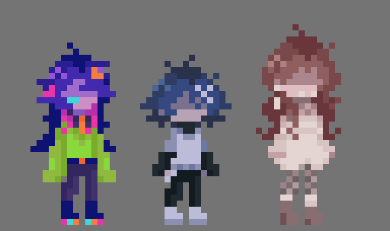
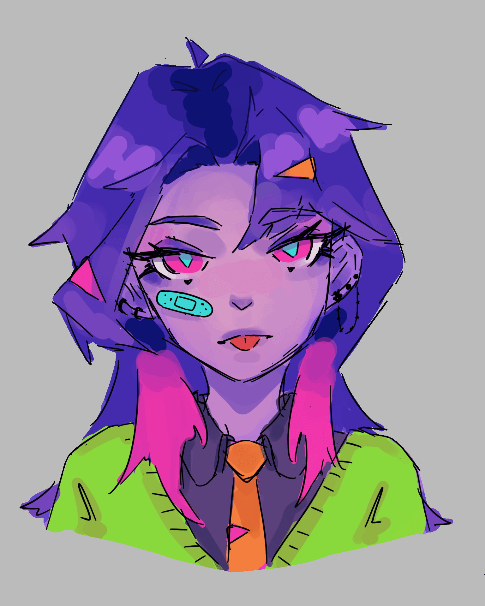
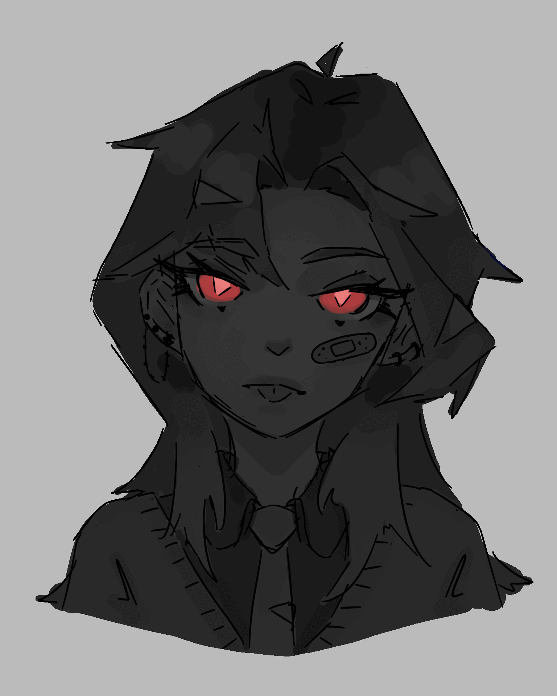
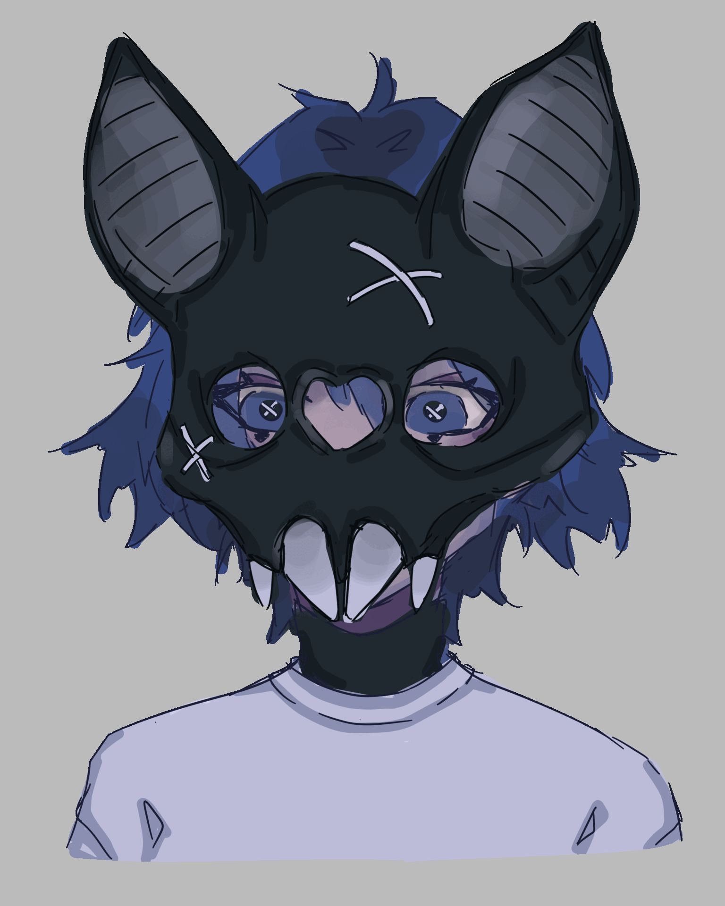
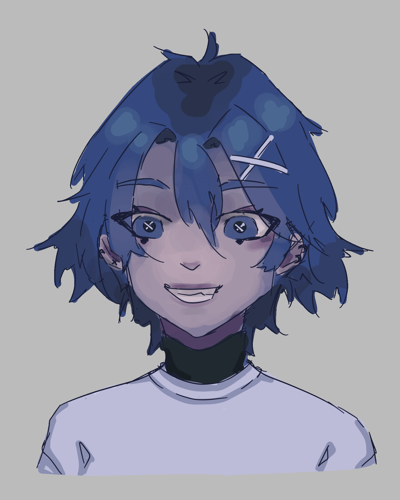
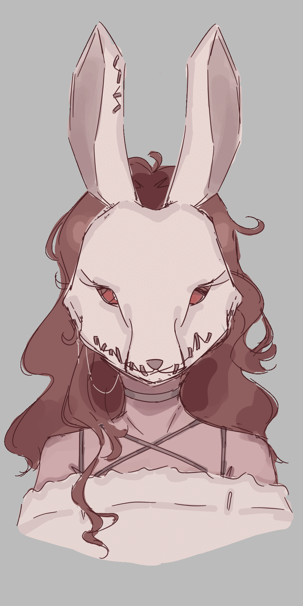
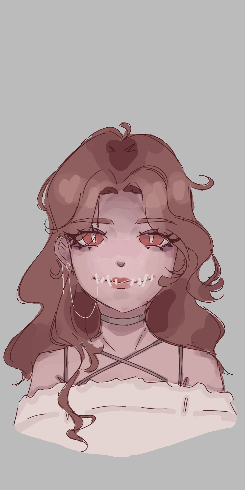
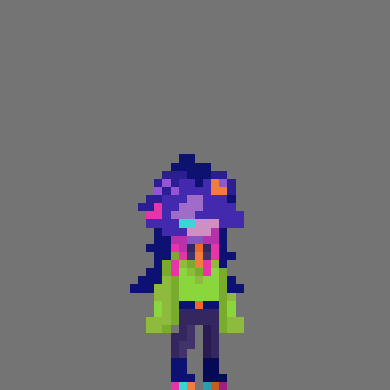
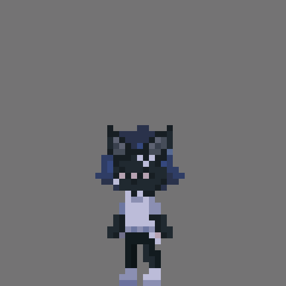
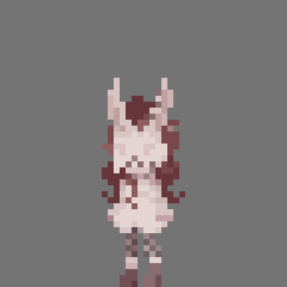
SOFTWARE
Unity, Aseprite, MediBang Paint & FL Studio